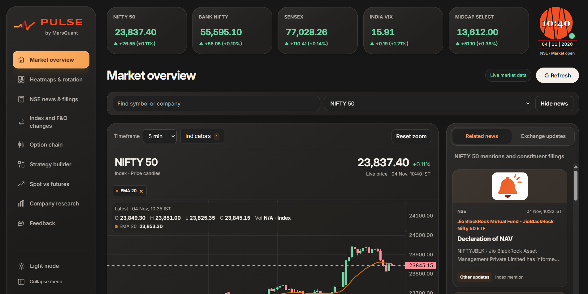
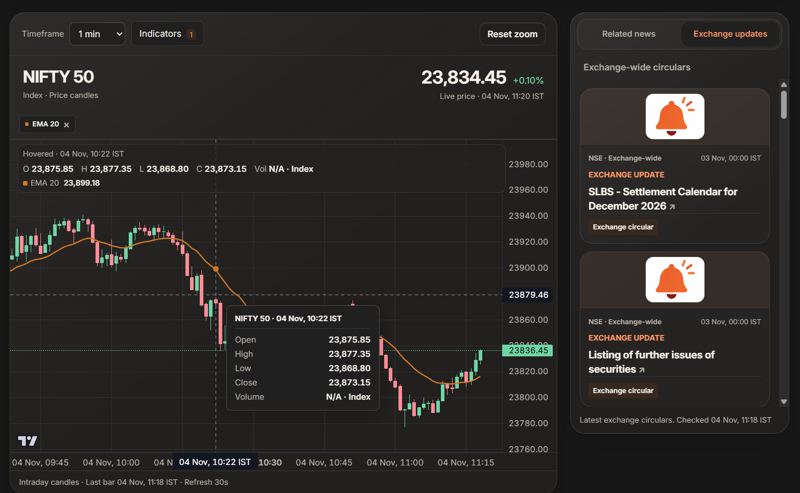
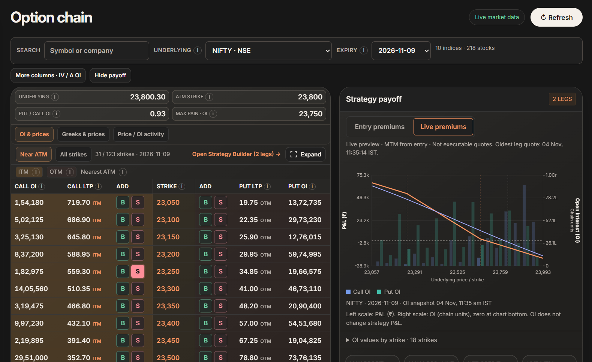
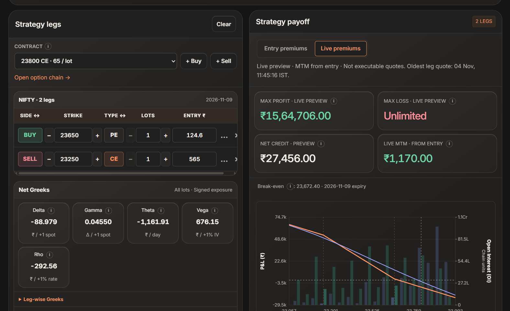
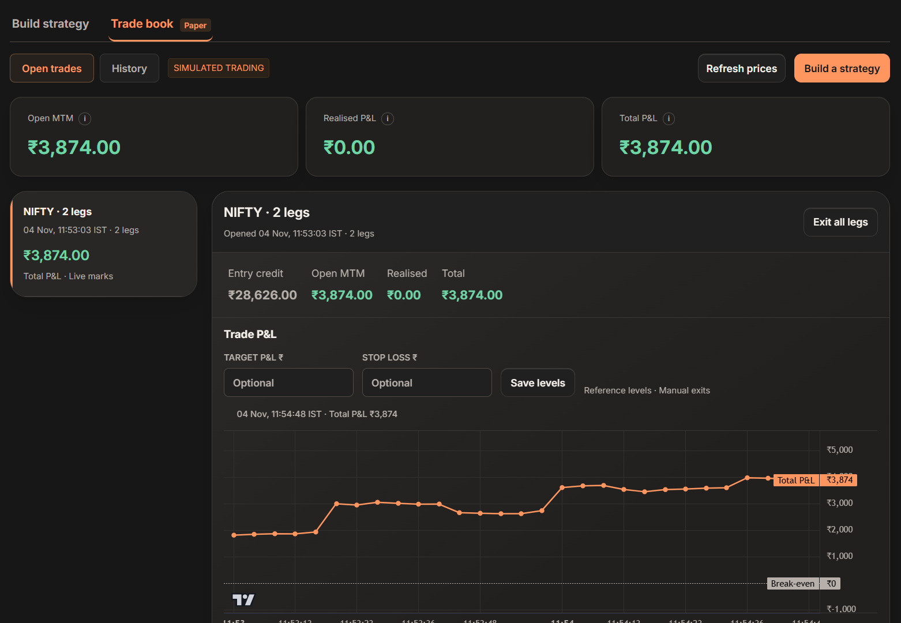
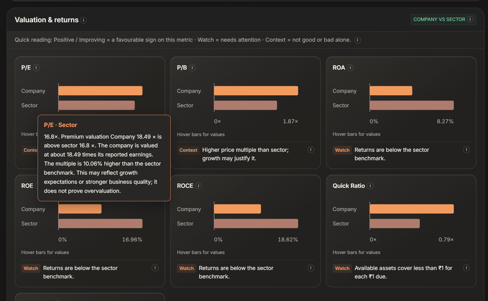
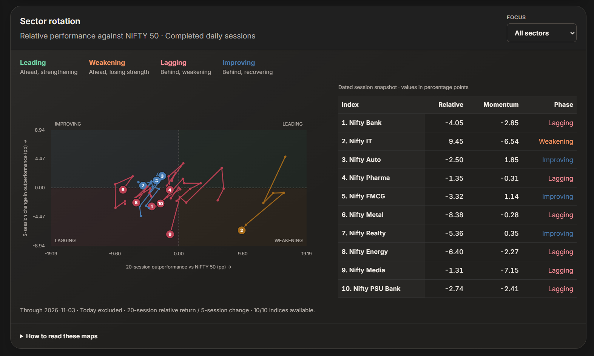
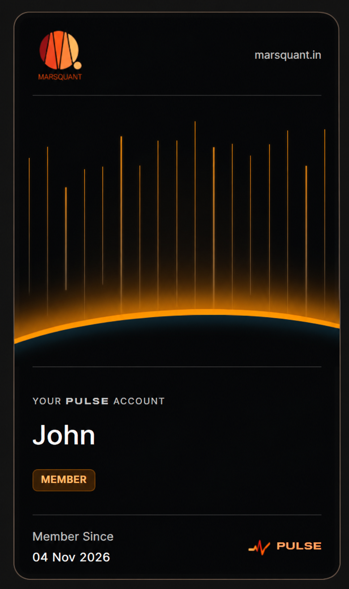

Market Intelligence
Monitor market movements, explore trends, and analyse price behaviour using an integrated collection of market intelligence tools.
Markets, options, and strategies. Connected in one powerful workspace built for your next informed decision.
By MarsQuant

One platform. Multiple possibilities.
From tracking market movements to analysing complex options strategies, PULSE brings essential trading intelligence and analytical tools together in one connected workspace.
Monitor market movements, explore trends, and analyse price behaviour using an integrated collection of market intelligence tools.
Explore options market data, evaluate strike-level activity, and understand how different option positions interact.
Move beyond basic option-chain analysis with a flexible strategy builder that lets you construct, modify, and evaluate multi-leg trading strategies.
Bring market news, company fundamentals, financial information, and sector insights into your trading workflow.
Market intelligence
Monitor market movements, explore trends, and analyse price behaviour using an integrated collection of market intelligence tools.

Options analytics
Explore options market data, evaluate strike-level activity, and understand how different option positions interact.

Strategy builder
Move beyond basic option-chain analysis with a flexible strategy builder that lets you construct, modify, and evaluate multi-leg trading strategies.

Paper trading
Evaluate simulated strategies, monitor positions, and understand performance through a dedicated paper trading environment.

Research & insights
Bring market news, company fundamentals, financial information, and sector insights into your trading workflow.

Heatmaps & sector rotation
Understand relative sector strength and market breadth with a clear view of performance, momentum, and rotation across indices.

Designed around you
Make Pulse feel like your own. Sign in with Google to connect your profile, then choose the theme that helps you focus while exploring market insights.

Why Pulse
Explore charts, market data, news, and research together.
Evaluate option-chain activity and multi-leg strategies.
Customise strategies and analyse potential payoff scenarios.
Access market insights, financial information, and sector performance.